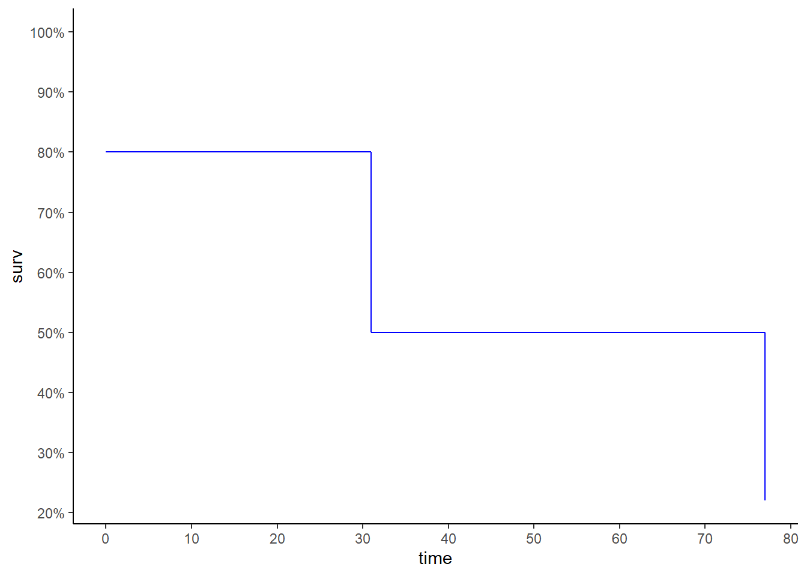
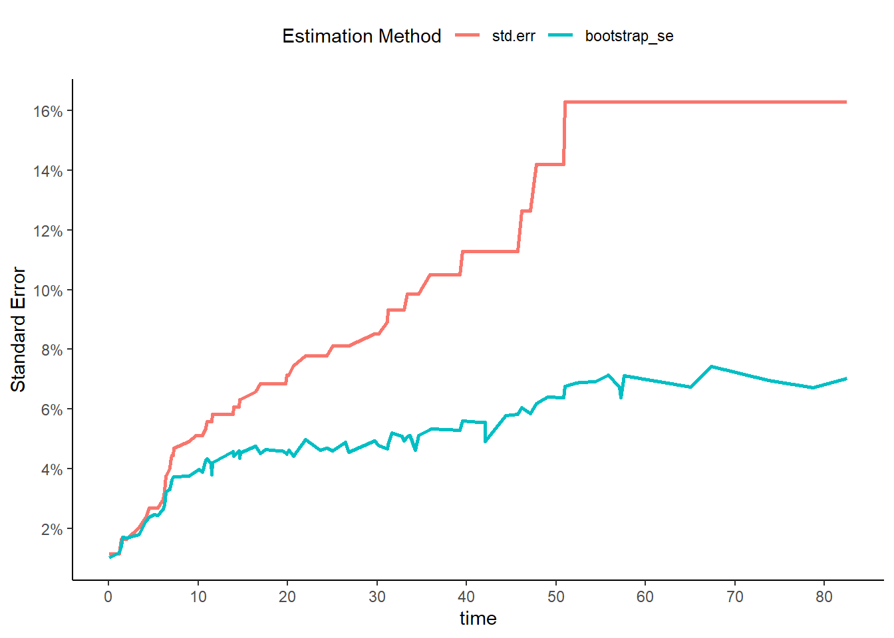

library(survival)
library(survminer)
library(ggplot2)
library(scales)
library(data.table)
BrainCancer <- ISLR2::BrainCancer
BrainCancerDt <- as.data.table(ISLR2::BrainCancer)11 - Survival Analysis and Censored Data
Libraries
Conceptual
1
1. For each example, state whether or not the censoring mechanism is independent. Justify your answer.
| Case | Independent | Justification |
|---|---|---|
| (A) In a study of disease relapse, due to a careless research scientist, all patients whose phone numbers begin with the number “2” are lost to follow up. | TRUE |
Phone number don’t any relation with disease relapse |
| (B) In a study of longevity, a formatting error causes all patient ages that exceed 99 years to be lost (i.e. we know that those patients are more than 99 years old, but we do not know their exact ages). | FALSE |
As older is a person has higher chances to die |
| (C) Hospital A conducts a study of longevity. However, very sick patients tend to be transferred to Hospital B, and are lost to follow up. | FALSE |
Very sick patients has higher chances to die |
| (D) In a study of unemployment duration, the people who find work earlier are less motivated to stay in touch with study investigators, and therefore are more likely to be lost to follow up. | FALSE |
Censoring time is correlated with the event time. |
| (E) In a study of pregnancy duration, women who deliver their babies pre-term are more likely to do so away from their usual hospital, and thus are more likely to be censored, relative to women who deliver full-term babies. | FALSE |
Censoring time is correlated with the event time. |
| (F) A researcher wishes to model the number of years of education of the residents of a small town. Residents who enroll in college out of town are more likely to be lost to follow up, and are also more likely to attend graduate school, relative to those who attend college in town. | TRUE |
It’s unusual to have a censored student that don’t keep studying. |
| (G) Researchers conduct a study of disease-free survival (i.e. time until disease relapse following treatment). Patients who have not relapsed within five years are considered to be cured, and thus their survival time is censored at five years. | TRUE |
After 5 years without the disease is not probably to get it back |
| (H) We wish to model the failure time for some electrical component. This component can be manufactured in Iowa or in Pittsburgh, with no difference in quality. The Iowa factory opened five years ago, and so components manufactured in Iowa are censored at five years. The Pittsburgh factory opened two years ago, so those components are censored at two years. | TRUE |
There is no reason to think that the components will failure just after been censored. |
| (I) We wish to model the failure time of an electrical component made in two different factories, one of which opened before the other. We have reason to believe that the components manufactured in the factory that opened earlier are of higher quality. | There is no information related to the data censoring process |
2
2. We conduct a study with \(n = 4\) participants who have just purchased cell phones, in order to model the time until phone replacement. The first participant replaces her phone after 1.2 years. The second participant still has not replaced her phone at the end of the two-year study period. The third participant changes her phone number and is lost to follow up (but has not yet replaced her phone) 1.5 years into the study. The fourth participant replaces her phone after 0.2 years. For each of the four participants (\(i = 1, \dots, 4\)), answer the following questions using the notation introduced in Section 11.1:
(A) Is the participant’s cell phone replacement time censored?
\(\delta_1 = 1, \; \delta_2 = 0, \; \delta_3 = 0, \; \delta_4 = 1\)
(B) Is the value of \(c_i\) known, and if so, then what is it?
\(c_2 = 2, \; c_3 = 1.5\)
(C) Is the value of \(t_i\) known, and if so, then what is it?
The \(t_i\) isn’t known.
(D) Is the value of \(y_i\) known, and if so, then what is it?
\(y_1 = 1.2, \; y_2 = 2, \; y_3 = 1.5, \; y_4 = 0.2\)
(E) Is the value of \(\delta_i\) known, and if so, then what is it?
\(\delta_1 = 1, \; \delta_2 = 0, \; \delta_3 = 0, \; \delta_4 = 1\)
3
3. For the example in Exercise 2, report the values of \(K\), \(d_1,\dots ,d_K\), \(r_1, \dots , r_K\), and \(q_1, \dots, q_K\), where this notation was defined in Section 11.3.
| K | r | q |
|---|---|---|
| 1 | 0 | 1 |
| 2 | 1 | 0 |
| 3 | 1 | 0 |
| 4 | 0 | 1 |
4
4. This problem makes use of the Kaplan-Meier survival curve displayed in Figure 11.9. The raw data that went into plotting this survival curve is given in Table 11.4. The covariate column of that table is not needed for this problem.

y_values <- c(26.5, 37.2, 57.3, 90.8, 20.2, 89.8)
names(y_values) <- c(rep(1,3),rep(0,3))
sort(y_values) 0 1 1 1 0 0
20.2 26.5 37.2 57.3 89.8 90.8 round(4/5 * 3/4 * 2/3, 2)[1] 0.4(A) What is the estimated probability of survival past 50 days?
round(4/5 * 3/4, 2)[1] 0.6(B) Write out an analytical expression for the estimated survival function.
\[ \hat{S}(t) = \begin{cases} 1.00 & \; \text{if } t < 26.5\\ 0.80 & \; \text{if } 26.5 \leq t < 37.2\\ 0.60 & \; \text{if } 37.2 \leq t < 57.3\\ 0.40 & \; \text{if } 57.3 \leq t\\ \end{cases} \]
5
5. Sketch the survival function given by the equation.
\[ \hat{S}(t) = \begin{cases} 0.80 & \; \text{if } t < 31\\ 0.50 & \; \text{if } 31 \leq t < 77\\ 0.22 & \; \text{if } 77 \leq t \\ \end{cases} \]
data.frame(
time = c(0:31,31:77, 77),
surv = c(rep(0.8, 32), rep(0.5, 47), 0.22)
) |>
ggplot(aes(time, surv))+
geom_line(color = "blue")+
expand_limits(y = 1)+
scale_x_continuous(breaks = seq(0, 80, by = 10))+
scale_y_continuous(breaks = seq(0, 1, by = 0.1),
labels = \(x) paste0(x *100,"%"))+
theme_classic()
Applied
10
10. This exercise focuses on the brain tumor data, which is included in the ISLR2 R library.
(A) Plot the Kaplan-Meier survival curve with \(\pm1\) standard error bands, using the survfit() function in the survival package.
BrainCancerKmSurv <- survfit(
Surv(time, status) ~ 1,
data = BrainCancerDt
)
ggsurvplot(BrainCancerKmSurv, color = "blue")
(B) Draw a bootstrap sample of size n = 88 from the pairs (yi, δi), and compute the resulting Kaplan-Meier survival curve. Repeat this process B = 200 times. Use the results to obtain an estimate of the standard error of the Kaplan-Meier survival curve at each timepoint. Compare this to the standard errors obtained in (a)
BrainCancerKmSurvDt <- surv_summary(BrainCancerKmSurv)
setDT(BrainCancerKmSurvDt)
set.seed(120)
BrainCancerBT <-
data.table(resample = 1:200
)[, .(data = .(
survfit(Surv(time, status) ~ 1,
data = BrainCancerDt[sample.int(88, replace = TRUE)]) |>
surv_summary()
)),
by = "resample"
][, data[[1]], by = "resample"
][, .(bootstrap_se = sd(surv)),
by = "time"
][BrainCancerKmSurvDt, on = "time"
][, melt(.SD, measure.vars = c("std.err", "bootstrap_se"),
value.name = "Standard Error",
variable.name = "Estimation Method")]
ggplot(BrainCancerBT, aes(time, `Standard Error`, color = `Estimation Method`))+
geom_line(linewidth = 1)+
scale_y_continuous(breaks = breaks_width(0.02), labels = percent_format())+
scale_x_continuous(breaks = breaks_width(10), labels = comma_format())+
theme_classic()+
theme(legend.position = "top")
(C) Fit a Cox proportional hazards model that uses all of the predictors to predict survival. Summarize the main findings.
Call:
coxph(formula = Surv(time, status) ~ ., data = BrainCancer)
coef exp(coef) se(coef) z p
sexMale 0.18375 1.20171 0.36036 0.510 0.61012
diagnosisLG glioma 0.91502 2.49683 0.63816 1.434 0.15161
diagnosisHG glioma 2.15457 8.62414 0.45052 4.782 1.73e-06
diagnosisOther 0.88570 2.42467 0.65787 1.346 0.17821
locSupratentorial 0.44119 1.55456 0.70367 0.627 0.53066
ki -0.05496 0.94653 0.01831 -3.001 0.00269
gtv 0.03429 1.03489 0.02233 1.536 0.12466
stereoSRT 0.17778 1.19456 0.60158 0.296 0.76760
Likelihood ratio test=41.37 on 8 df, p=1.776e-06
n= 87, number of events= 35
(1 observation deleted due to missingness)(D) Stratify the data by the value of ki . (Since only one observation has ki=40 , you can group that observation together with the observations that have ki=60 .) Plot Kaplan-Meier survival curves for each of the five strata, adjusted for the other predictors.
BrainCancerKiGrid <-
BrainCancerDt[, lapply(.SD, \(x) if(is.integer(x)) fifelse(x == 40L, 60L, x) else x[1L] )
][, unique(.SD) , .SDcols = !c("time","status")]
BrainCancerKiSv <-
survfit(BrainCancerCox,
data = BrainCancer,
newdata = BrainCancerKiGrid,
conf.type = "none")
plot(BrainCancerKiSv,
xlab = "Months",
ylab = "Survival Probability",
col = 2:6)
legend("bottomleft",
factor(BrainCancerKiGrid$ki) |>
as.character(),
col = 2:6, lty = 1)
11
11. This example makes use of the data in Table 11.4.
(A) Create two groups of observations. In Group 1, X <2, whereas in Group 2, X ≥ 2. Plot the Kaplan-Meier survival curves corresponding to the two groups. Be sure to label the curves so that it is clear which curve corresponds to which group. By eye, does there appear to be a difference between the two groups’ survival curves?
ExampleTable <-
data.table(time = y_values,
status = names(y_values) |> as.integer(),
X = c(0.1, 11, -0.3, 2.8, 1.8, 0.4)
)[, under_2 := factor(X < 2)]
ExampleTableSv <- survfit(
Surv(time, status) ~ under_2,
data = ExampleTable
)
plot(ExampleTableSv,
xlab = "Months",
ylab = "Survival Probability",
col = 2:6)
legend("bottomleft",
levels(ExampleTable$under_2),
col = 2:6, lty = 1)
(B) Fit Cox’s proportional hazards model, using the group indicator as a covariate. What is the estimated coefficient? Write a sentence providing the interpretation of this coefficient, in terms of the hazard or the instantaneous probability of the event. Is there evidence that the true coefficient value is non-zero?
Call:
coxph(formula = Surv(time, status) ~ under_2, data = ExampleTable)
coef exp(coef) se(coef) z p
under_2TRUE 0.3401 1.4051 1.2359 0.275 0.783
Likelihood ratio test=0.08 on 1 df, p=0.7797
n= 6, number of events= 3 (C) Recall from Section 11.5.2 that in the case of a single binary covariate, the log-rank test statistic should be identical to the score statistic for the Cox model. Conduct a log-rank test to determine whether there is a difference between the survival curves for the two groups. How does the p-value for the log-rank test statistic compare to the p-value for the score statistic for the Cox model from (b)?